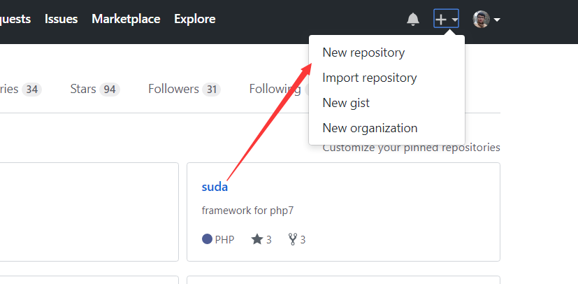
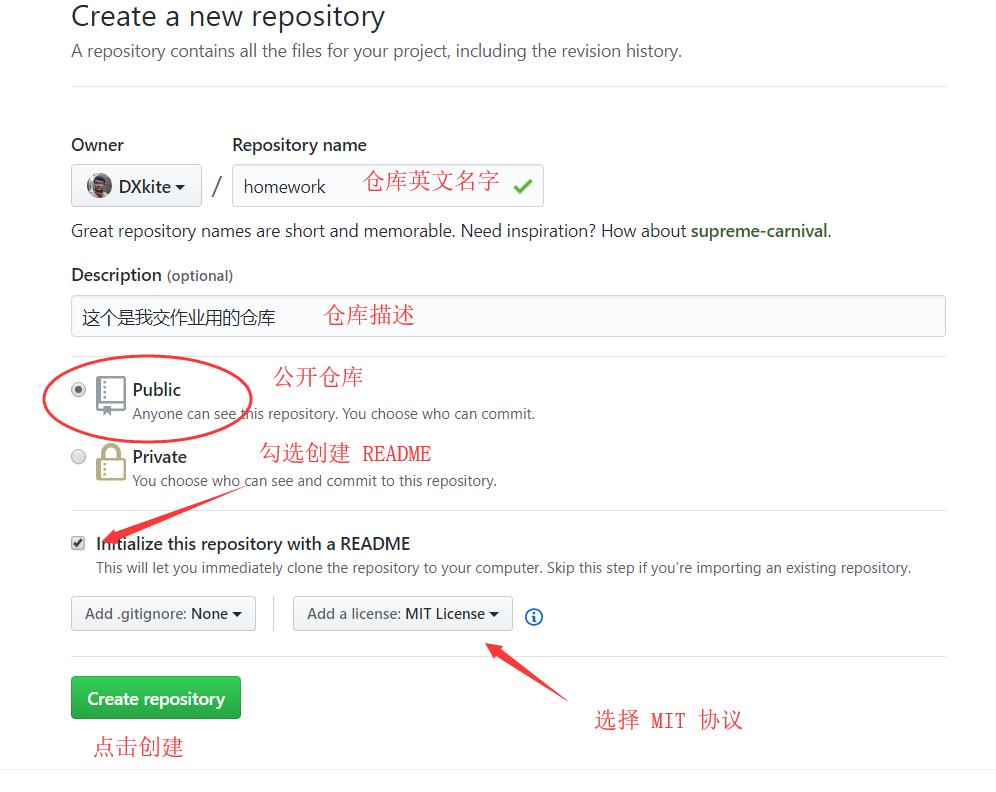
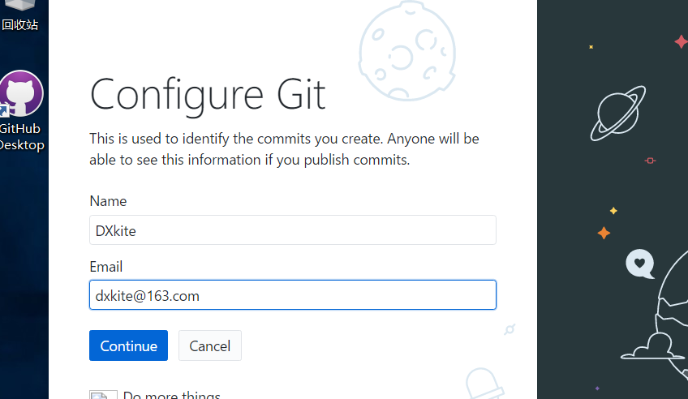

Git与Github的简单使用
作为一个程序员，版本管理系统我们都要得会啊，本次教一下简单的Git功能的使用
Git 是一个比较流行的代码版本管理系统
注册一个Github账号
在开始本教程之前，可以先去Github注册一个账号: https://github.com ，英文的网站，如果不熟悉的话可以去 码云、Coding 去注册账号、注册完成以后就可以浪了
创建一个代码仓库
在首页找到 + 号，点击后有一个 New repository

点击后出现如下界面 也可以点击访问：https://github.com/new

填写后即可创建一个代码仓库，创建成功后出现如下界面，复制红框的部分 （git@github.com:DXkite/homework.git）

Git安装配置
安装如下软件
- Github Desktop https://desktop.github.com/ Windows版本 点击下载
- Git https://www.git-scm.com/download/ Windows版本 点击下载
全部安装，安装配置选择默认配置即可，安装完成后登陆

登陆成功后，会要你配置Git，填写你注册时的账号邮箱即可

点击 Continue 之后即可，点击 Finish 完成
配置SSH登陆
选择一个文件夹（最好是放代码的地方），右键鼠标，选择 Git Bash Here

输入运行命令 ssh-keygen，然后一直回车就行

然后找到上图的 id_rsa.pub 文件 /c/Users/DXkite/.ssh/id_rsa.pub 既在 C:/Users/DXkite/.ssh/id_rsa.pub
打开文件，复制文件内容

打开Github，选择 Settinng

选择 New SSH Key

填上内容后点击 Add SSH Key

点击后会出现一个提示，输入密码，即可，在刚刚的窗口输入命令 ssh git@github.com，可能会要你输入yes

出现如上提示即可
克隆并上传第一个提交
克隆仓库
还记得之前复制的红框部分么（git@github.com:DXkite/homework.git）？现在需要使用命令运行一下
1 | git clone [红框部分] |
运行结果如下：

可以发现文件夹内会新建了一个文件夹，打开后，编辑 README.md

修改后，在这个文件夹打开 Git Bash
运行命令 git status ，可以看到仓库的状态
git status 用来获取当前仓库的状态

git add . 把文件添加到仓库
git commit -m “提交信息” 添加一个提交

git push origin master 把提交上传到Github

提交完成后，可以查看你的仓库的文件变化

使用Github Desktop 提交
修改文件后，打开 Github Desktop 操作内容如下：